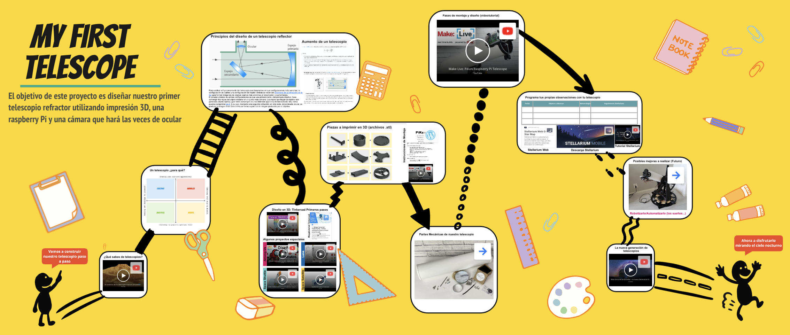

Proyecto: Construye tu propio telescopio en clase
El presupuesto de ningún centro educativo es capaz de aproximarse a los 10000 millones de dólares que ha costado el diseño y puesta en órbita del James Webb pero sí que podemos diseñar el nuestro (de bajo coste) utilizando materiales que podemos encontrar en todos los centros (o casi). adquiriendo algunas partes para poder lograrlo.
Así, el objetivo de esta parte del REA es diseñar nuestro propio telescopio reflector utilizando una cámara digital como ocular y una raspberry pi para poder registrar las imágenes que observemos y visualizarlas a través de la pantalla de un ordenador o de nuestro propios dispositivos móviles.
Puedes acceder al al tablero interactivo que contiene todo la información de la actividad haciendo clic sobre el siguiente enlace o la imágen que aparece bajo estas líneas.
